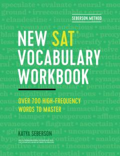

NSSAT imtihoni uchun so'z boyligini oshirish va tayyorgarlik ko'rish mashqlari.
Ushbu qo'llanma o'quvchilarga SAT imtihoniga tayyorgarlik ko'rishda so'z boyligini oshirish va matnlarni tushunish ko'nikmalarini rivojlantirishga yordam beradi. Kitobda maxsus mashqlar va testga oid lug'at boyligini mustahkamlash usullari keltirilgan.